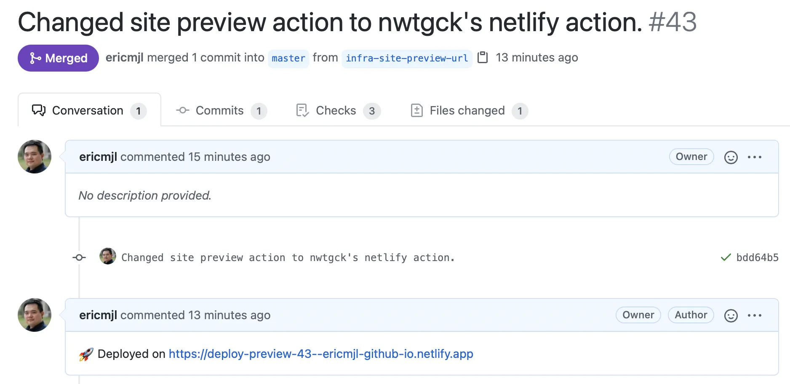

written by Eric J. Ma on 2021-04-28 | tags: netlify web development continuous integration til
I learned a new thing: how to enable Netlify site preview URLs to be commented back on a PR thread! A story about how the collective intellect of the world is such a wonderful resource to query.
Twitter is an amazing universe. I asked a question, and friends came to help.
I use Netlify to host my site previews. That said, I use GitHub actions to build the site, as site-building on Netlify has a limit of 300 minutes, while for my open source projects, I have unlimited minutes. I was curious about how to enable static site previews on Netlify with an automatic comment on the PR housing the URL. Peter Bull kindly replied, and that's when I learned that GitHub user @nwtgck created a GitHub Action that makes this easy.
Inside one of our GitHub actions configuration YAML files, we add this step:
# Taken from: https://github.com/drivendataorg/cloudpathlib/blob/master/.github/workflows/docs-preview.yml - name: Deploy site preview to Netlify uses: nwtgck/actions-netlify@v1.1 with: publish-dir: "./site" production-deploy: false github-token: ${{ secrets.GHPAGES_TOKEN }} deploy-message: "Deploy from GitHub Actions" enable-pull-request-comment: true # this is crucial! enable-commit-comment: false overwrites-pull-request-comment: true alias: deploy-preview-${{ github.event.number }} env: NETLIFY_AUTH_TOKEN: ${{ secrets.NETLIFY_AUTH_TOKEN }} NETLIFY_SITE_ID: ${{ secrets.NETLIFY_SITE_ID }} timeout-minutes: 1
The result looks something like this:

Now, it's much easier for me and collaborators to find the preview URL rather than dig through a bunch of logs to find it.
When one can query the collective intellect of the whole wide world, that's an amazing feeling.
@article{
ericmjl-2021-preview-netlify,
author = {Eric J. Ma},
title = {Preview built static sites on Netlify},
year = {2021},
month = {04},
day = {28},
howpublished = {\url{https://ericmjl.github.io}},
journal = {Eric J. Ma's Blog},
url = {https://ericmjl.github.io/blog/2021/4/28/preview-built-static-sites-on-netlify},
}
I send out a newsletter with tips and tools for data scientists. Come check it out at Substack.
If you would like to sponsor the coffee that goes into making my posts, please consider GitHub Sponsors!
Finally, I do free 30-minute GenAI strategy calls for teams that are looking to leverage GenAI for maximum impact. Consider booking a call on Calendly if you're interested!